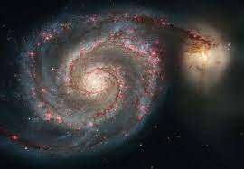
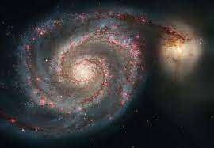

This website is all about Space!
A galaxy is a vast, gravitationally bound system of stars, stellar remnants, interstellar gas, dust, and dark matter, all orbiting a common center of mass. Galaxies are the fundamental building blocks of the universe, forming the backdrop of cosmic structure on a large scale. They come in various shapes and sizes, ranging from small dwarf galaxies with a few billion stars to massive elliptical and spiral galaxies containing hundreds of billions of stars. Here are some images of our galaxy; The milky way!

 

Maybe videos concerning space as whole would be better!
Perhaps some audio?
Click for fun factsThe universe, a boundless expanse that stretches beyond our comprehension, has captivated the human imagination for millennia. As we gaze into the night sky, we are met with a mesmerizing display of celestial wonders, sparking a profound curiosity about the cosmos. In this essay, we embark on a journey to explore the mysteries, grandeur, and beauty of the universe that envelops us. At the heart of our cosmic exploration is the realization that the universe is inconceivably vast, expanding beyond the limits of our understanding. It is a cosmic tapestry woven with galaxies, stars, planets, and dark matter, creating a spectacle that spans billions of light-years. The enormity of the universe challenges our perception of scale and pushes the boundaries of human comprehension. Galaxies, the building blocks of the cosmos, come in various shapes and sizes, forming cosmic neighborhoods that host billions of stars. The Milky Way, our home galaxy, is a spiral beauty adorned with countless stars, planets, and celestial wonders. Yet, it is just one among billions of galaxies scattered throughout the observable universe, each contributing to the vastness of the cosmic tableau. Stars, the luminous beacons that dot the cosmic canvas, are born from colossal clouds of gas and dust. These stellar nurseries give birth to stars of different sizes, colors, and fates. Some stars burn brightly and die in spectacular supernovae, scattering heavy elements into space. Others, like our Sun, follow a more serene path, providing the energy that sustains life on Earth. Planets, the celestial bodies that orbit stars, offer a glimpse into the diversity of cosmic landscapes. From the scorching deserts of Mercury to the icy plains of Pluto, each planet in our solar system tells a unique story of formation and evolution. Beyond our solar system, the discovery of exoplanets has expanded our understanding of planetary systems, raising the tantalizing possibility of habitable worlds beyond our own. Dark matter, an enigmatic substance that eludes direct detection, comprises a significant portion of the universe's mass. Its presence is inferred through its gravitational influence on visible matter, shaping the large-scale structure of the cosmos. Unraveling the nature of dark matter remains one of the greatest challenges in modern astrophysics, highlighting the mysteries that persist even in our era of advanced scientific exploration. As we contemplate the universe's grandeur, we are confronted with the cosmic phenomena that defy our conventional understanding. Black holes, gravitational behemoths that warp the fabric of spacetime, challenge the very nature of reality. Their voracious appetite for matter and the mysterious event horizons that shroud them in darkness evoke a sense of awe and intrigue, pushing the boundaries of our comprehension. In conclusion, the universe stands as an awe-inspiring testament to the marvels of existence. Its vastness, complexity, and beauty beckon us to explore, discover, and contemplate the mysteries that lie beyond our terrestrial abode. As we gaze into the night sky, let us embrace the sense of wonder that the universe instills in us, fostering a deep appreciation for the cosmic symphony that surrounds us. The universe, with its galaxies, stars, planets, and enigmatic dark matter, invites us to embark on a perpetual journey of exploration and understanding, reminding us of the boundless wonders that await our discovery in the cosmic tapestry of existence.
Articles on Space